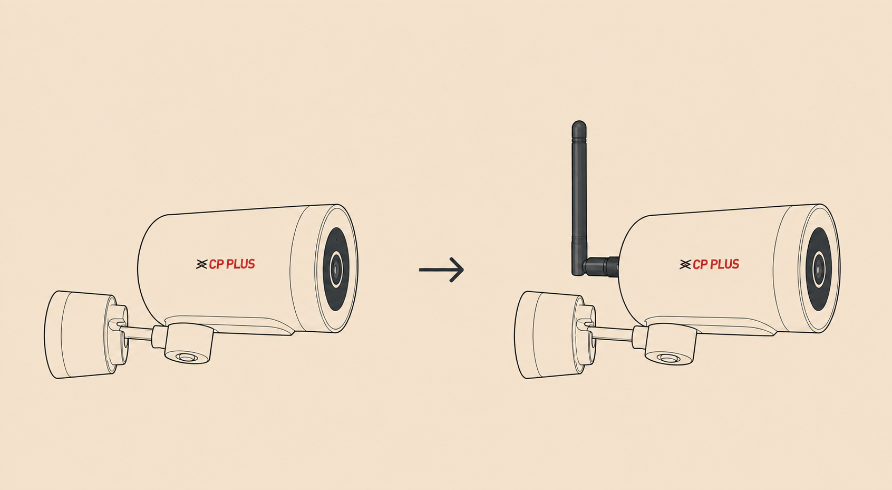
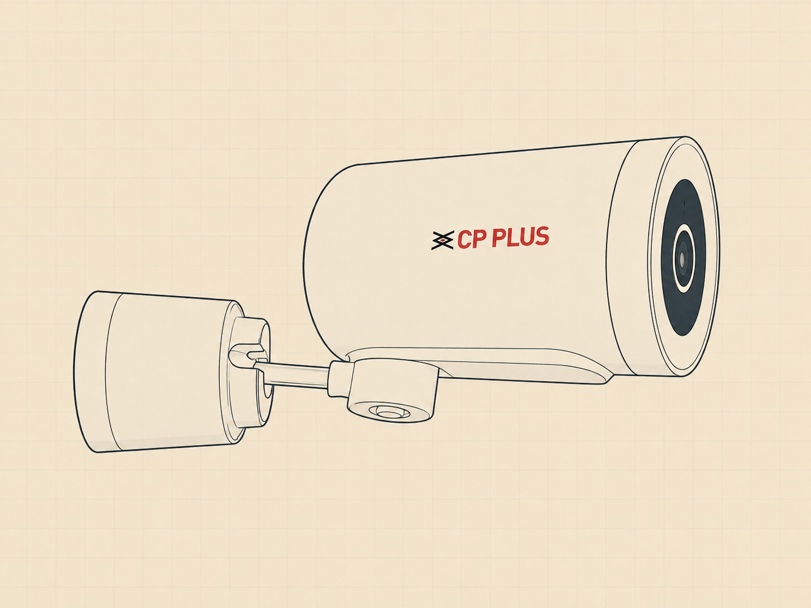
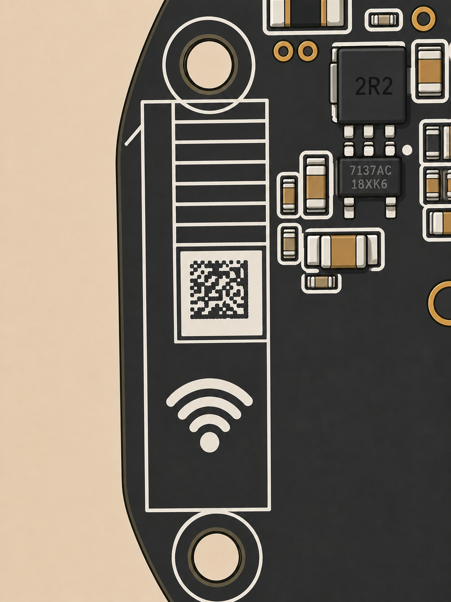
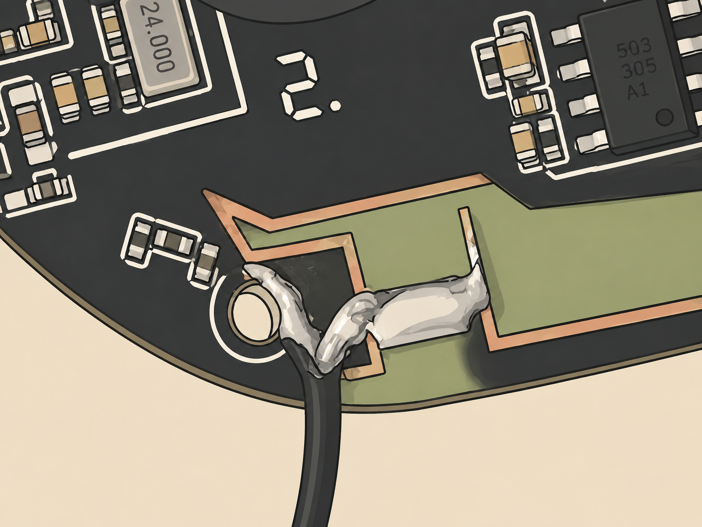
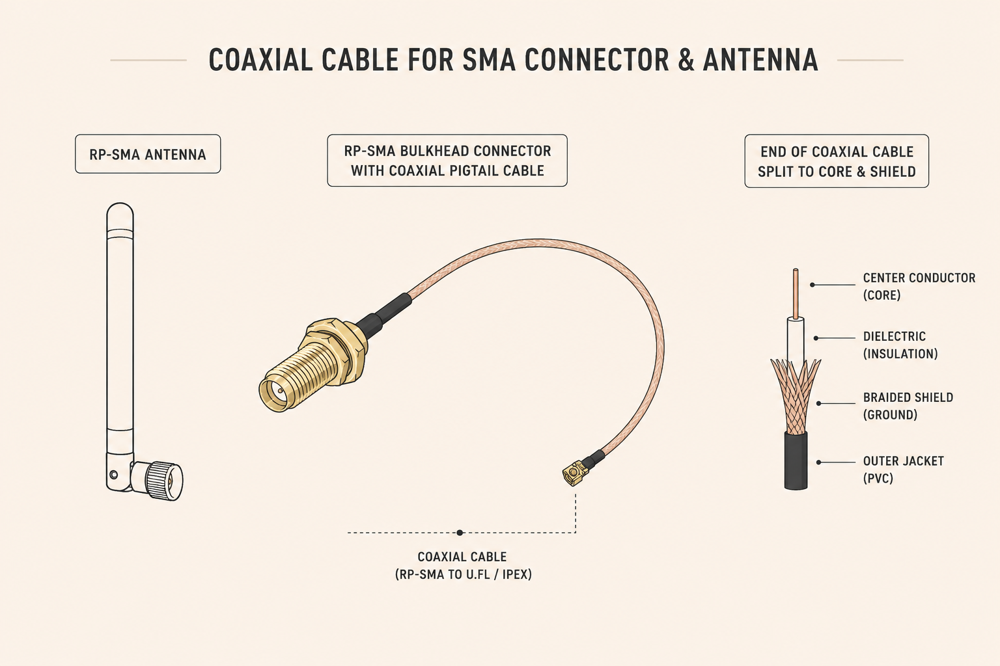
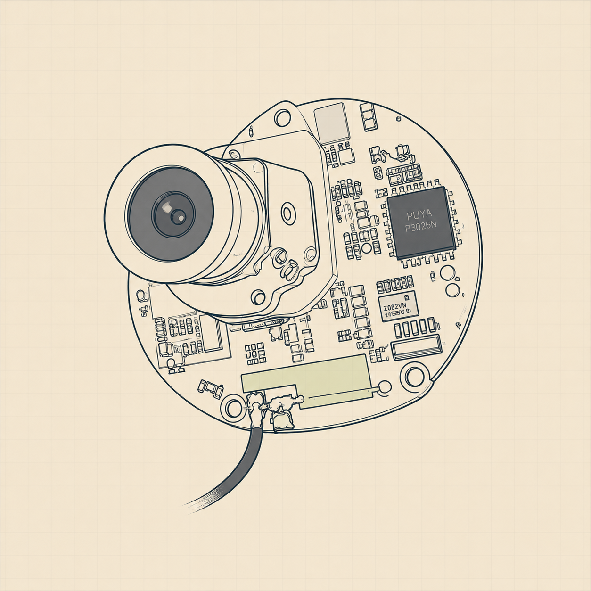

A step-by-step teardown that adds an external 2.4 GHz RP-SMA antenna to the CP Plus V48A Wi-Fi CCTV camera — tapping the on-board antenna feed to noticeably extend wireless range. Drawn from a real, working mod.

The V48A radio feeds a small on-board chip antenna through a printed RF trace on the mainboard (marked with a Wi-Fi symbol). By scraping the solder mask off that feed trace and soldering a coax pigtail onto it — centre core → feed, shield → ground — we route the signal out to a panel-mounted RP-SMA jack and a proper external antenna. A higher-gain external antenna radiates far better than the tiny internal one, extending usable range.
| 1 | 2.4 GHz Wi-Fi antenna | RP-SMA "rubber duck" type |
| 2 | RP-SMA bulkhead pigtail | Panel-mount jack + short coax lead |
| 3 | Solder | Thin rosin-core, 60/40 or similar |
| 4 | Heat-shrink / hot glue | Optional — insulation & strain relief |
| A | Phillips screwdriver | Small, for housing screws |
| B | Fine-tip soldering iron | + flux recommended |
| C | Sharp blade / scraper | To remove the solder mask |
| D | Drill / rotary tool | Small bit for the rear hole |
| E | Multimeter | Optional — check for shorts |
Unplug the camera. Open it from the front: remove the front bezel / lens-ring screws and work your way in, backing out screws until the mainboard is exposed. Keep the screws in order so reassembly is painless.

On the mainboard, look for the printed Wi-Fi (📶) symbol in the silkscreen. It sits next to the L-shaped copper feed trace that drives the on-board chip antenna — that trace is our tap point.

With a sharp blade, gently scrape the coating (solder mask) off the L-shaped copper feed trace until bright, clean copper shows. Scrape lightly — the goal is to expose the trace, not cut through it. Also expose a small patch of nearby ground.
Take the RP-SMA pigtail's coax and separate it into its two conductors: the inner centre core (signal) and the outer shield / braid (ground). Keep both leads as short as you can and tin them with a touch of solder.
Solder the centre core to the exposed L-trace feed, and the shield to ground. Keep the leads short to preserve RF performance, and make sure the core and shield never touch — a bridge here shorts the antenna. A clean, quick joint is best.

Drill a hole in the back of the housing, pass the RP-SMA jack through, and lock it in place with its nut and washer. Position it so the coax reaches the board without strain.

Screw the external 2.4 GHz antenna onto the RP-SMA jack, power the camera, and connect it in the app. Confirm it links and streams — ideally check that signal strength / range has improved. Always test before final assembly.

If it works: reassemble the housing, route and secure the coax, and add strain relief. If it doesn't: recheck for a solder bridge or short between core and shield, a cold joint, a cut or damaged trace, or wires pinched during disassembly. Fix, then retest.
This is a community how-to, shared so others can squeeze more Wi-Fi range out of the same camera. Big thanks to everyone whose work made it possible: